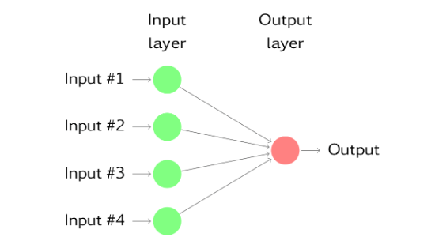
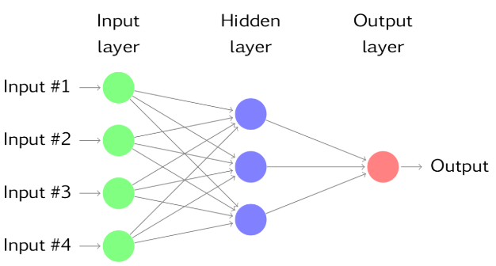
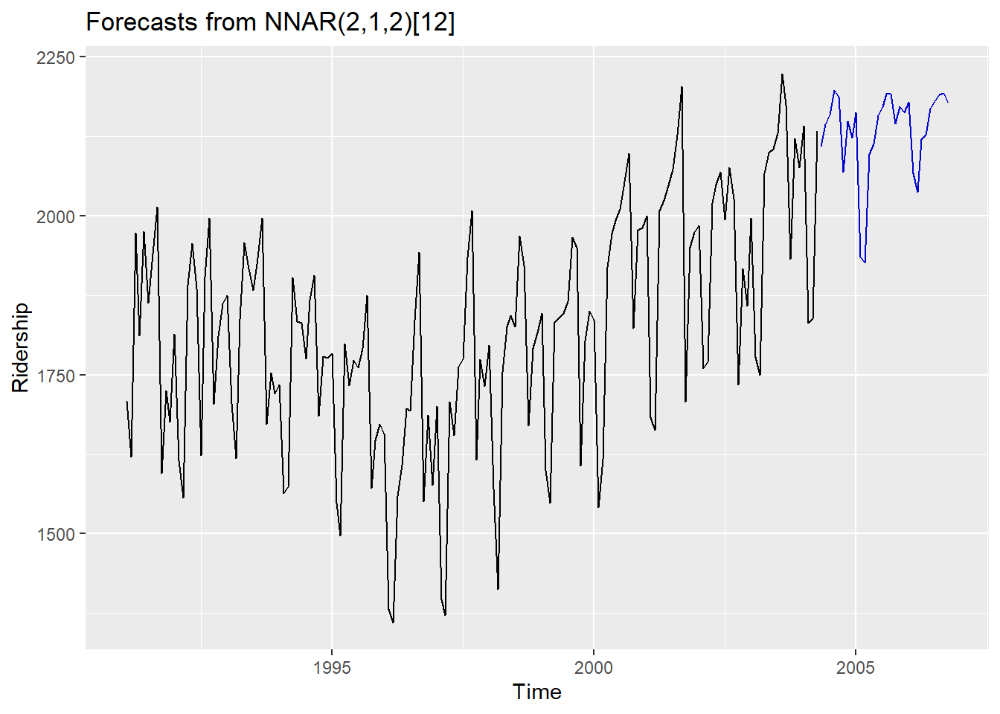
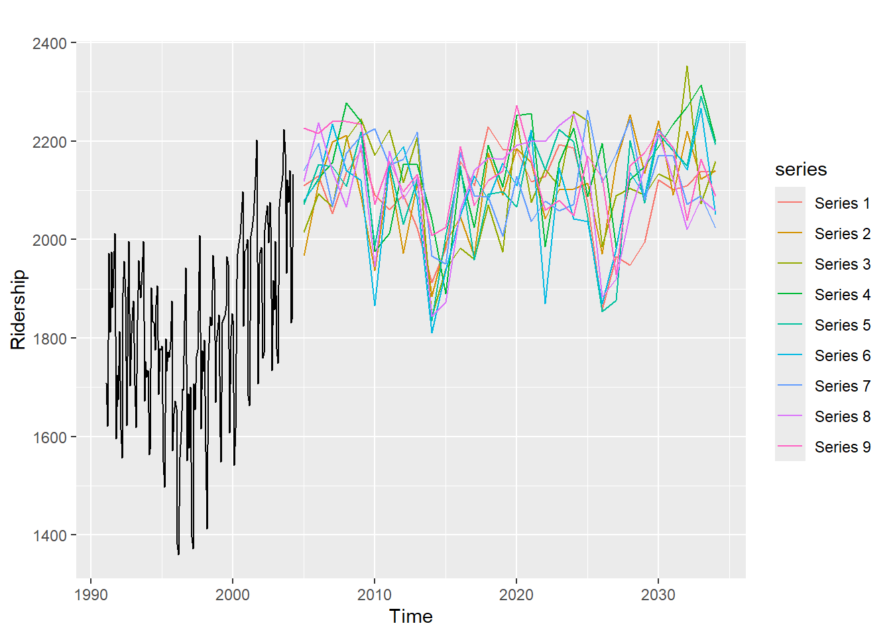
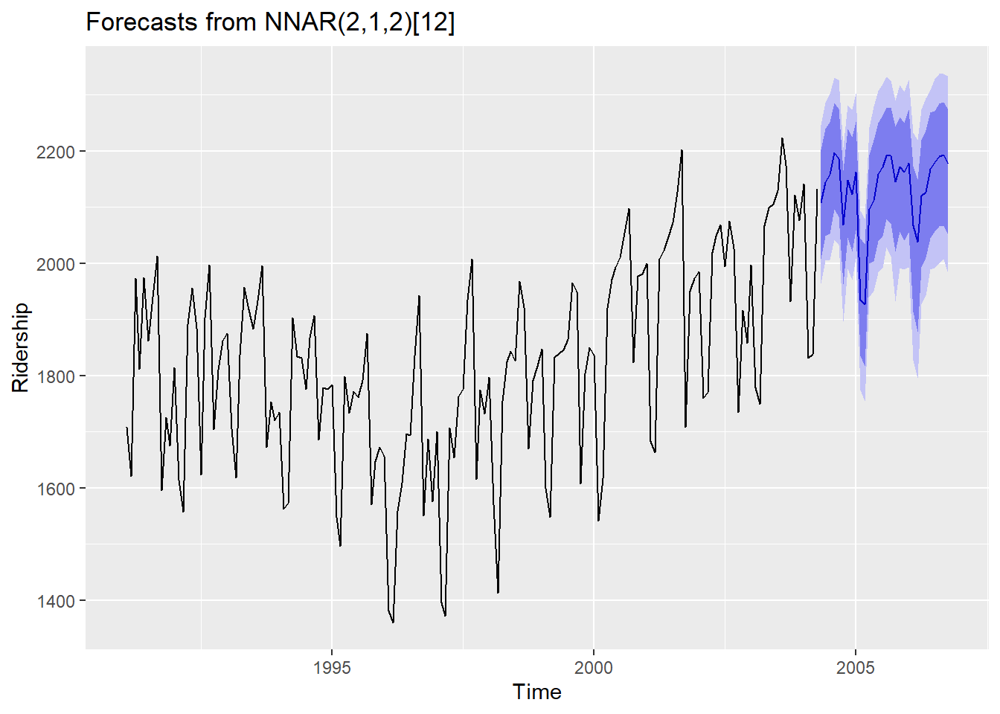

pacman::p_load("forecast",
"ggplot2",
"dplyr")
Amtrak.data <- read.csv(".../Amtrak.csv") # 데이터 불러오기
Amtrak.data %>%
as_tibble14 Neural Network Model
14.1 Introduction
- 시계열 데이터에 신경망을 이용하여 모형 적합과 예측을 할 수 있다.
- Ridership on Amtrak Trains(미국 철도 회사 “Amtrak”에서 수집한 1991년 1월~2004년 3월까지 매달 환승 고객 수) 예제를 이용하여 신경망 자기회귀모형이 실제 데이터에 어떻게 적용되는지 설명한다.
14.2 신경망
- 신경망은 예측변수(또는 입력값)가 밑바닥 계층을 이루고 예측값(또는 출력값)이 꼭대기 계층을 이루며 이 두 계층 중간에는 숨겨진 뉴런을 포함하는 계층이 있을 수 있다.
- 숨겨진 계층이 없는 경우는 선형 회귀와 같다.
- 아래의 그림은 4개의 예측변수를 고려하는 선형 회귀의 신경망 버전이다.

- 숨겨진 뉴런이 중간 계층에 있으면 신경망은 비선형이 되며 숨겨진 계층의 수와 각 숨겨진 계층의 노드 수는 반드시 미리 정해야한다.
- 다음 그림은 단순한 예제를 나타낸다.

- 각 계층의 노드는 이전의 계층에서부터 입력값을 받는데 한 계층의 노드의 출력값은 다음 계층의 입력값이 된다.
- 각 마디의 입력값은 가중 선형 형태로 결합이 되며, 결과는 출력되기 전에 비선형 함수에 의해 수정된다.
- 예를 들어 위의 그림에서 숨겨진 뉴런 \(j\)로 들어가는 입력값은
\[ \begin{aligned} z_{j}=b_{j}+\sum_{i=1}^{4}\omega_{i,j}x_{i}. \end{aligned} \]
- 이것은 다음 계층의 입력값이 되기전 비선형 함수에 의해 수정된다.
\[ \begin{aligned} s(z)=\frac{1}{1+e^{-z}}. \end{aligned} \]
- 다음 계층의 노드로 들어 갈 때 각 계층의 출력값은 \(s(z)\)이며, 이것은 또 다시 가중 선형 형태로 결합되어 다음 계층의 노드의 입력값으로 들어간다.
- 비선형 함수로 수정됨으로써 극단적인 입력값의 효과를 줄이는 경향이 있기에 이상치에 덜 민감하다.
- 매개변수 \(b_{j}\), \(\omega_{i,j}\)는 data로부터 학습된 것이며 가중치의 값은 종종 너무 커지지 않도록 제한된다.
- “학습된”의 의미는 처음에는 가중치 값을 무작위로 주지만 관측된 data를 이용하여 가중치는 update된다.
- 신경망으로 출력된 예측값에는 무작위성이 있다.
- 다른 무작위 시작점을 가지고 연결망을 여러번 훈련시키고, 결과들의 평균을 구한다.
- “학습된”의 의미는 처음에는 가중치 값을 무작위로 주지만 관측된 data를 이용하여 가중치는 update된다.
14.3 신경망 자기회귀
- 시계열의 시차값이 신경망의 입력값으로써 사용될 수 있으며 이것을 신경망 자기회귀 또는 NNAR 모형이라고 부른다.
14.3.1 데이터 불러오기
# A tibble: 159 × 2
Month Ridership
<chr> <dbl>
1 01/01/1991 1709.
2 01/02/1991 1621.
3 01/03/1991 1973.
4 01/04/1991 1812.
5 01/05/1991 1975.
6 01/06/1991 1862.
7 01/07/1991 1940.
8 01/08/1991 2013.
9 01/09/1991 1596.
10 01/10/1991 1725.
# ℹ 149 more rows14.3.2 데이터 전처리
# Convert to ts for Target
ridership.ts <- ts(Amtrak.data$Ridership,
start = c(1991, 2), # 시계열의 시작 연도 / c(1991, 2) : 1991년 2월 -> 첫 번째 시계열은 제거했기 때문
frequency = 12) # 주기 / 월별 시계열로 1년에 12번 관측
# 시계열 그림
plot(ridership.ts,
xlab = "Time", ylab = "Ridership (in 000s)",
ylim = c(1300, 2300))
Caution! CSV 파일로 불러온 데이터를 살펴보면 승객 수를 포함하는 변수 Ridership가 수치형임을 알 수 있다. 시계열 데이터 분석을 위해 함수 ts()를 이용하여 해당 변수를 시계열 객체로 변환해야 한다.
Result! 시계열 그림을 살펴보면 Amtrak 데이터는 U자 형태의 추세를 발견할 수 있으며, 여름(7월과 8월) 동안에 승객이 급증하는 뚜렷한 계절변동도 볼 수 있다.
14.3.3 모형 적합
- NNAR(\(p,k\))에서 \(p\)는 입력값으로써 사용된 시차의 수, \(k\)는 숨겨진 계층의 노드 수를 의미한다.
- NNAR(\(p,k\))는 출력값 \(y_{t}\)를 예측하기 위해 마지막 \(p\)개의 관측값 (\(y_{t-1}\), \(y_{t-2}\), \(\ldots\), \(y_{t-p}\))을 입력값으로 사용하고 숨겨진 계층에 \(k\)개의 뉴런이 있는 신경망이다.
- NNAR(\(p,0\))는 ARIMA(\(p,0,0\)) 모형과 같지만 정상성을 보장하는 모수에 대한 제약이 없다. (ARIMA(\(p,0,0\)) 모형은 모수가 1보다 작아야 정상성 만족)
- 계절성 data에 대하여, 같은 계절의 마지막 관측값을 입력값으로 넣는 것도 유용하다.
- 계절성이 있는 경우 모형은 NNAR\((p,P,k)_{m}\)로써 \(P\)는 입력값으로써 사용된 계절성 시차의 수이며 \(m\)은 주기를 의미한다.
- NNAR\((p,P,k)_{m}\)은 \(y_{t-1}\), \(\ldots\), \(y_{t-p}\), \(y_{t-m}\), \(y_{t-2m}\), \(\ldots\), \(y_{t-mP}\)를 입력값으로써 사용하고, 숨겨진 계층에 \(k\)개의 뉴런이 있다.
- NNAR\((p,P,k)_{m}\)은 ARIMA\((p,0,0)(P,0,0)_{m}\) 모형과 같지만 정상성을 보장하는 모수에 대한 제약이 없다.
- R 함수
nnetar()은 NNAR\((p,P,k)_{m}\) 모델을 적합시키며, \(p\)와 \(P\)값들을 정하지 않으면, 자동적으로 선택된다.- 비계절성에 대해서는 AR(\(p\)) 모형에 대하여 최적의 시차수가 기본값이다.
- 계절성 시계열에 대해서는 기본값은 \(P\)=1이고 \(p\)는 계절성으로 조정된 데이터에 맞춘 최적 선형 모델로 고른다.
- \(k\)를 정하지 않으면 \(k=(p+P+1)/2\)로 둔다. (가장 가까운 정수로 반올림)
set.seed(10)
fit <- nnetar(ridership.ts, repeats = 200,
lambda = "auto") # If lambda="auto", then a transformation is automatically selected using BoxCox.lambda
# 200 networks to fit with different random starting weights & averaged./ Size : The number of hidden node
autoplot(forecast(fit, h = 30)) +
ylab("Ridership")
- 예측할 때는 연결망을 반복하여 적용한다.
- 한 단계 앞을 예측할 때는 단순히 주어진 과거 데이터를 입력값으로 사용하며 두 단계 앞을 예측할 때는 한 단계 예측값을 과거 데이터와 함께 입력으로 사용한다.
- 필요한 모든 예측값을 계산할 때까지 이 과정을 수행한다.
14.3.4 예측 구간
- 신경망 모델 \(y_{t}=f(\)y\(_{t-1})+\epsilon_{t}\)에서 오차는 정규분포를 따른다고 가정하기에 정규분포로부터 오차값을 무작위로 얻어 반복적으로 시뮬레이션할 수 있다.
- 예를 들어 \(T+1\)에서 \(\epsilon^{*}_{T+1}\)이 오차의 분포로부터 무작위로 뽑은 것이라고 하면, \(y^{*}_{T+1}=f(\)y\(_{T})+\epsilon^{*}_{T+1}\)로 \(y_{T+1}\)에 대한 추정값을 얻을 수 있다. 이 때, \(y^{*}_{T+1}\)은 \(y_{T+1}\)에 대한 예측분포로부터 뽑을 수 있는 하나의 가능한 값이다.
sim <- ts(matrix(0, nrow = 30L,
ncol = 9L),
start = end(ridership.ts)[1L] + 1L)
set.seed(10)
for(i in seq(9)){
sim[,i] <- simulate(fit, nsim = 30L)
}
autoplot(ridership.ts) +
autolayer(sim) +
ylab("Ridership")
set.seed(10)
fcast <- forecast(fit,
PI = TRUE,
npaths = 1000, # Npaths : How many simulation/ Normal error
h = 30)
autoplot(fcast) +
ylab("Ridership")
simulate함수를 이용히여 예측구간을 구할 수도 있지만forecast()함수의PI=TRUE를 통하여 예측구간을 얻을 수 있다.- 오차는 기본적으로 정규분포에서 추출한다.